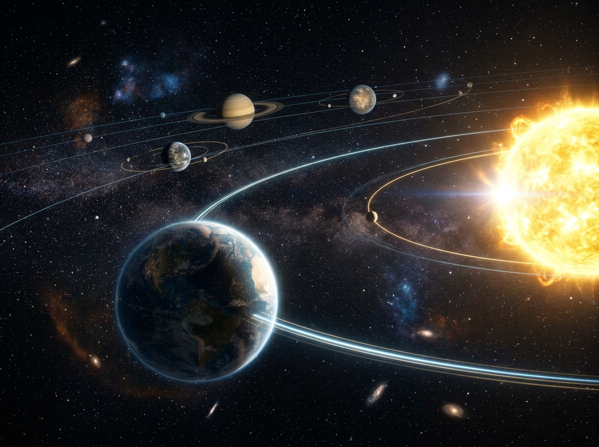

THE UNIVERSE
IS CLOSER THAN
YOU THINK.
Explore planets, galaxies, cosmic events
and the mysteries beyond Earth.
ASTEROID COLLISION
Experience an interactive
asteroid collision with Earth.
SATELLITE VISUALS
Live and near-real-time
satellite imagery and
Earth observation visuals.